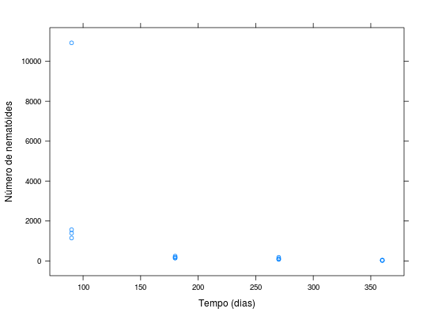
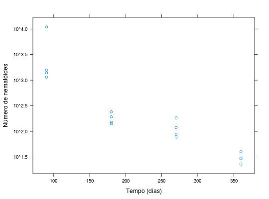

Experimento do número de nematóides (vermes que estão presentes no solo) por vasos infectando plantas de figo em diferentes idades de inoculação, experimento com 4 repetições.
data.frame com 16 observações e 3 variáveis, em que
diasreptnematRAMALHO et al. (2005), pág. 43.
library(lattice) data(RamalhoTb3.1)#> Warning: data set ‘RamalhoTb3.1’ not found# Dados originais. aggregate(nemat ~ dias, data = RamalhoTb3.1, FUN = function(x) { c(mean = mean(x), var = var(x)) })#> dias nemat.mean nemat.var #> 1 90 3.756500e+03 2.286809e+07 #> 2 180 1.812500e+02 2.073583e+03 #> 3 270 1.162500e+02 2.284917e+03 #> 4 360 3.050000e+01 4.966667e+01plot(nemat ~ dias, data = RamalhoTb3.1, ylab = "Número de nematóides", xlab = "Tempo (dias)")xyplot(nemat ~ dias, data = RamalhoTb3.1, ylab = "Número de nematóides", xlab = "Tempo (dias)")# Dados aplicando logaritmo. aggregate(log(nemat) ~ dias, data = RamalhoTb3.1, FUN = function(x) { c(mean = mean(x), var = var(x)) })#> dias log(nemat).mean log(nemat).var #> 1 90 7.73394377 1.10468963 #> 2 180 5.17708301 0.05960750 #> 3 270 4.69747108 0.14874015 #> 4 360 3.39821672 0.05149097plot(log10(nemat) ~ dias, data = RamalhoTb3.1, ylab = "log do número de nematóides", xlab = "Tempo (dias)")plot(nemat ~ dias, data = RamalhoTb3.1, log = "y", ylab = "log do número de nematóides", xlab = "Tempo (dias)")xyplot(nemat ~ dias, data = RamalhoTb3.1, scales = list(y = list(log = TRUE)), ylab = "Número de nematóides", xlab = "Tempo (dias)")